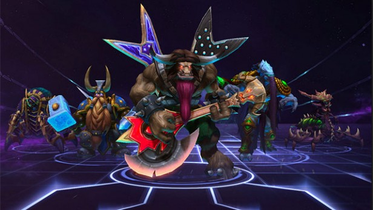
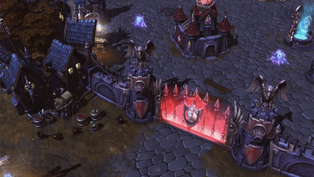
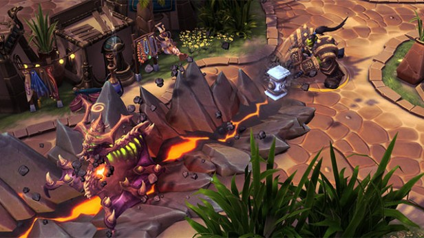
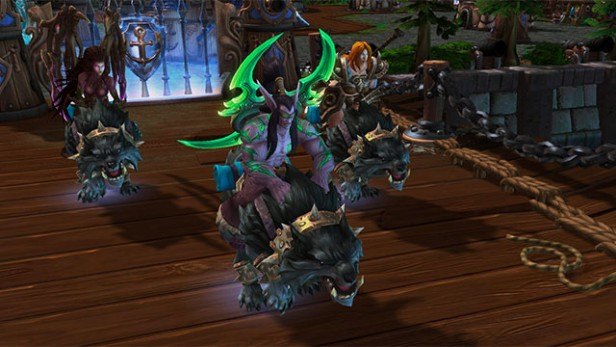

by Nick Cowen 19 May 2015
One of the knocks you might hear about Heroes of the Storm ahead of its June 2 launch is that it’s ‘baby’s first MOBA (Multiplayer Online Battle Arena, if you’re wondering)’. We’ve been stuck into the beta for quite some time now and we can report that, yes, it’s less intimidating and easier to get to grips with than the likes of Dota or League of Legends, but that doesn’t mean it’s in any way a game for the casual crowd. The following tips won’t really be of much interest to MOBA veterans, but if you’ve never played a game of this type here are a couple of things in mind before you enter the Nexus.
This may sound obvious, but it’s worth doing a little bit of investigation in the game’s Training Mode and in the shop – where you have the option of trying out a Hero before you buy it – to learn about the different heroes and their different strengths and weaknesses. Simply picking a character you like the look of and then blundering into a match won’t help much. In fact, it’ll frustrate both you – because you won’t get the most out of your Heroes of the Storm match – and your teammates, because you won’t be able to help them properly. If you’re playing an Assassin, taking a couple of warriors head on will get you killed. If you’re playing a Support Hero, remember to buff and heal your teammates. Most important of all, get to grips with the basic classes before you try out a Specialist.
If are a lone-wolf player then Heroes of the Storm is not for you; wandering off on your own is a surefire way to get killed and your teammates won’t thank you for leaving them in the lurch. Most Heroes won’t survive an encounter with two or more opponents by themselves – unless your team is ridiculously ahead on points – and tackling any objective, be it a Fort, a Map Quest or a Mercenary Camp by yourself usually ends with you staring at a loading bar as your Hero re-spawns back at your team’s Nexus. Remember, there is no ‘I’ in team. There is strength in numbers. United you stand. There are not many other ways we can put this…
See Also:Xbox One vs PS4
The game includes a team-chat feature for a reason. If you’re not talking to each other, it’s hard to formulate a winning strategy. If you have no plan, you are relatively easy pickings. Don’t be reticent in talking to your teammates and don’t shy away from offering ideas. If you think attacking enlisting Bandit Camp will help divert your opponents’ attentions away from an assault on the mid-stream, ping for assistance. If your teammates need to return to defend your Core, tell them.
Every single map – or Battleground as they’re known – in Heroes of the Storm is the same in that it has a top, middle and lower channel that bot soldiers – and occasionally allies – trundle through. That’s about where the similarities end, however, as every map boasts a feature that can help swing the tide back and forth in a match. In The Cursed Hollow, for example, Raven Tributes spawn at certain points during the battle; collect three of them and, for a limited time, the bot soldiers on your opponent’s team have their health reduced and the fortifications stop firing on your troops. In Blackheart’s Bay, chests containing Dubloons spawn and once you turn in enough of those, the AI starts firing on your opponents’ forts. There’s a distinct advantage in taking control of the map’s feature as it generally pours a world of hurt down on the enemy team. If you don’t make some concerted effort to seize the feature, you’re going to be on the back foot pretty quickly.
See Also:Best Games 2015
While enlisting the help of Mercenaries – by beating the hell out of them – sounds like it could be in no way be a bad thing, you should time your attacks on these Camps. Engaging in a battle for its own sake is stupid and time-consuming. Furthermore, once you manage to enlist some Mercenaries, they’ll head towards the enemy forts on the same path they always take – and it might not necessarily be where you want to focus an attack. The best time to take down a Mercenary Camp is just before the main Feature in the Battleground is activated, because even if your opponents beat you to the punch on that, they’ll still have some heavy hitters to contend with and it’ll force them to refocus their efforts.
One tactic that emerged in Heroes of the Storm in the beta is known affectionately as ‘Creepjacking’. This practice usually involves Heroes who can cloak and lurk near a Mercenary Camp watching and waiting as the opposing team attacks some bots, slowly wearing them down, but losing Health in the process. Just as the attackers are about to win the skirmish, the cloaked Heroes call in their teammates and either kill their opponents or drive them away from the Camp. This way, they now have control of some strong bots and they didn’t have to do any of the heavy lifting. So when you attack a Mercenary Camp, make sure you’re backing one another up and make sure you can defend your kill at the end of the battle.
See Also:Best Gaming Laptops 2015
Heroes of the Storm is different from many other MOBA’s because it relies very heavily on teamwork and no one player or Hero is capable of ‘carrying’ their team. It doesn’t matter how experienced you are at MOBAs, which character you pick or how hard you fight; if the rest of your team don’t know what they’re doing, you’re doomed. So if you fancy yourself as something of an armchair general, take charge. Ping your teammates objectives. Get them to regroup for assaults. If the tide of battle is turning against your team, advise them on tactics. Oh, and do something other than say ‘F%$#ing Noobs!’ if you find yourself playing with less experienced folk. It doesn’t help them and it doesn’t help you.
No matter how badly the battle is going, never quit. Never surrender. Never leave the game. We can’t stress this enough. First off, if you make a habit of disconnecting from games, Blizzard will toss you into the penalty box, matching you only with other habitual quitters and chucking you out of the Hero League. Second, even if the battle looks lost, bear in mind that refocussing your team’s efforts and taking down a couple of enemy Heroes can help immensely; the higher they’ve levelled, the more XP they’re worth. If you manage to take out two or three higher ranked enemies, you may just be in a position to launch a comeback.